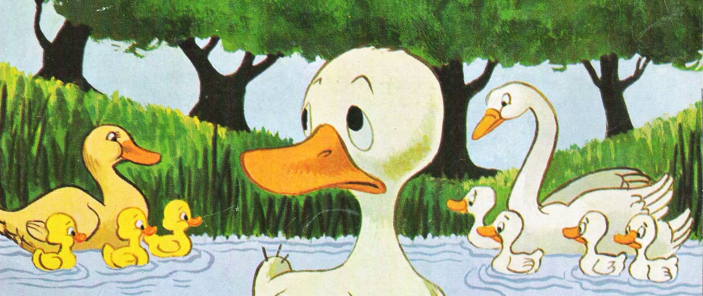

O Patinho Feio

Era uma vez uma pata que estava prestes a se tornar mamãe. Ela botou 5
ovos e esperou ansiosamente pelo dia que os ovos chocassem para
finalmente conhecer os seus lindos patinhos. Quando o grande dia chegou,
os ovos da mamãe pata começaram a chocar um por um.
A mamãe pata
deu as boas vindas aos seus novos patinhos com muita alegria. Mas o
último ovo estava demorando mais para chocar e quando finalmente a casca
do último ovo se abriu, para surpresa da mamãe pata, de lá saiu um
patinho muito diferente de todos os seus outros filhos. Todos eram muito
bonitos, mas o último era um pouco esquisito. Então a pata olhou para
ele e disse:
— Que patinho estranho! Tão diferente, não acredito que é meu filho!
Os irmãos também rejeitaram o patinho, deixavam ele para trás e riam dele por seu jeito desajeitado, assim também toda a bicharada do lugar rejeitavam o patinho. O pato foi crescendo muito triste e solitário, pois sentia que ninguém gostava dele. Assim, teve a ideia de ir embora, sair daquele lugar para buscar a felicidade. Ele encontra um homem que o leva para casa, mas lá havia um gato e eles não se deram bem.
Então, o patinho continua sua busca por um lugar que ele possa viver feliz. Foi passando uns dias e o pato foi crescendo, e em uma de suas caminhadas chegou em um lago, onde avista várias aves lindas nadando, contentes. Eram cisnes! As aves olham para ele e o convidam para se juntar a elas. O patinho, ainda meio surpreso, vai até lá. Quando chega, percebe que aquelas aves maravilhosas eram parecidas com ele. Ao olhar seu reflexo nas águas, vê que ele era igual a elas mesmo! Ele não era um pato, ele era um cisne! E assim, ao encontrar sua verdadeira família, o patinho (que não era pato e nem feio!) vive feliz para sempre.